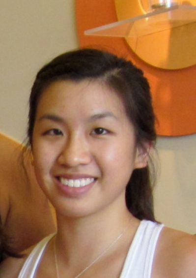
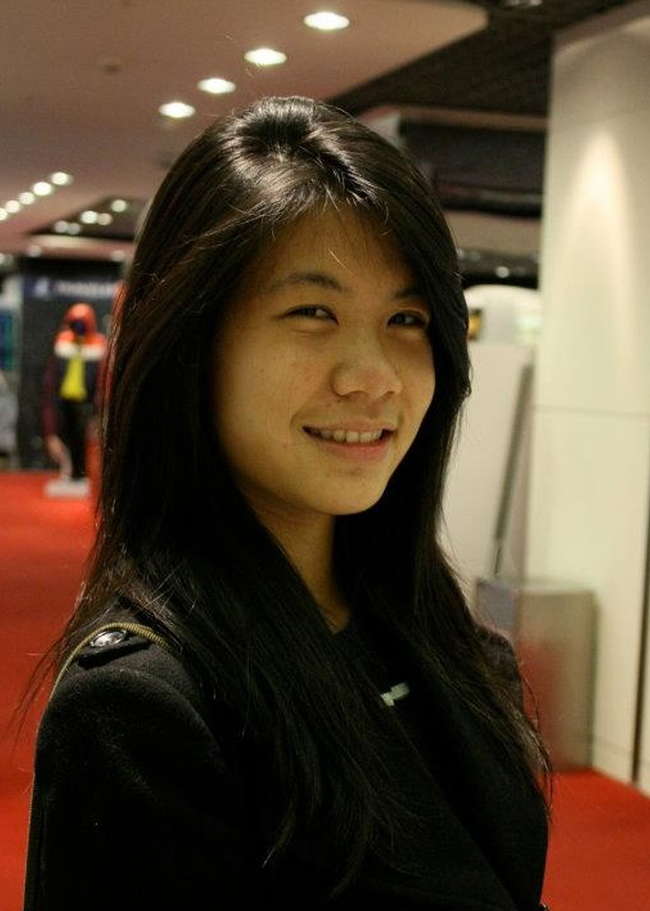

Students
Below are current students who are involved in research on aging at Olin College.
Elizabeth Doyle
Olin College - Class of 2015
Mechanical Engineering
Sharon Grimshaw
Olin College - Class of 2015
Engineering with Interaction Design

Irene Huang
Olin College - Class of 2014
Engineering with Sustainable Design
Christine Keung
Wellesley College - Class of 2014
Economics

Helen Wang
Olin College - Class of 2014
Engineering with Product Design
Hongda (Louis) Yi
Olin College - Class of 2015
Electrical and Computer Engineering